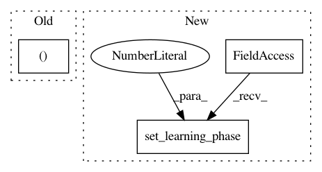

810bd0bce7e63c3bbcb4e3ba3cd3804287f55795,plugins/Convert_Masked.py,Convert,__init__,#Convert#Any#Any#Any#Any#Any#,9
Before Change
self.erosion_kernel_size = erosion_kernel_size
if erosion_kernel_size is not None:
if erosion_kernel_size > 0:
self.erosion_kernel = cv2.getStructuringElement(cv2.MORPH_ELLIPSE,(erosion_kernel_size,erosion_kernel_size))
elif erosion_kernel_size < 0:
self.erosion_kernel = cv2.getStructuringElement(cv2.MORPH_ELLIPSE,(abs(erosion_kernel_size),abs(erosion_kernel_size)))
self.blur_size = blur_size
After Change
if erosion_kernel_size > 0:
self.erosion_kernel = cv2.getStructuringElement(cv2.MORPH_ELLIPSE,(erosion_kernel_size,erosion_kernel_size))
elif erosion_kernel_size < 0:
self.erosion_kernel = cv2.getStructuringElement(cv2.MORPH_ELLIPSE,(abs(erosion_kernel_size),abs(erosion_kernel_size)))
self.blur_size = blur_size
self.seamless_clone = seamless_clone
self.match_histogram = match_histogram
In pattern: SUPERPATTERN
Frequency: 3
Non-data size: 3
Instances
Project Name: deepfakes/faceswap
Commit Name: 810bd0bce7e63c3bbcb4e3ba3cd3804287f55795
Time: 2018-03-09
Author: othniel.cundangan@gmail.com
File Name: plugins/Convert_Masked.py
Class Name: Convert
Method Name: __init__
Project Name: broadinstitute/keras-rcnn
Commit Name: 8f3dcdedefa5a520dcc08800a99e40388796dfa4
Time: 2017-09-27
Author: yeong-khang.lee@vitrox.com
File Name: tests/layers/losses/test_rpn.py
Class Name:
Method Name: test_rpn_regression
Project Name: broadinstitute/keras-rcnn
Commit Name: 8f3dcdedefa5a520dcc08800a99e40388796dfa4
Time: 2017-09-27
Author: yeong-khang.lee@vitrox.com
File Name: tests/layers/losses/test_rpn.py
Class Name:
Method Name: test_rpn_classification